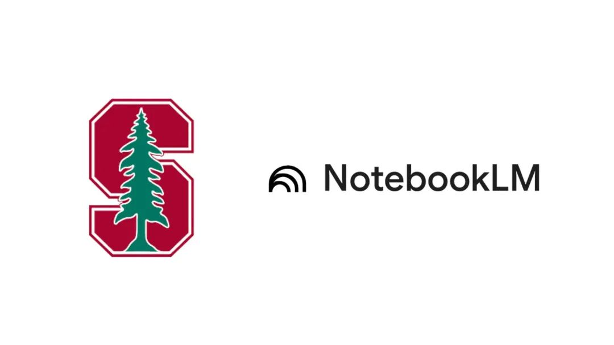

大多数人用 NotebookLM 的方式很简单：上传 PDF，然后问一些基础问题。
但真正把它用到极致的人，做法完全不同。
第一步不是总结内容，而是直接问：
👉 “基于这些材料，最可能出现的 3 道考试题是什么？”
关键还不在这里。
他们会继续追问：
“把这些概念与上周阅读内容关联，生成一份综合学习指南。”
“设计几道把今天内容与之前作业结合的练习题。”
这一步，才是真正的分水岭。
他们不是在复习，而是在反向推演教授的出题逻辑，并强迫系统建立跨章节、跨时间线的知识连接。
效果是什么？
从“记住内容”升级为理解结构、预测重点、建立关联网络。
当你让 NotebookLM 扮演“学生助手”，你得到的是摘要。
当你让它扮演“教授”，你得到的是考试策略。
真正的秘诀不是记更好的笔记，而是让 AI 按评分标准思考。
